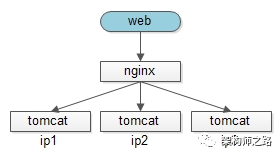

为啥总在凌晨上线，如何无损发布
为什么很多公司升级系统，选择在晚上上线？
答：美名其曰，晚上上线，对用户影响最小。
为什么会对用户产生影响？
答：系统升级往往需要重启，重启的过程中，正在访问的用户会访问失败。
如果升级的是web-server：

如上图，重启ip1上的tomcat时，tomcat上或许有1000个http请求正在处理，这些请求就会失败。
如果升级的是service：

如上图，重启ip1的service时，service上或许有2000个请求正在处理，这些请求就会失败。
web-server升级能否不影响正在处理的请求？
答：可以，需要nginx和web-server配合。
（1）给nginx发指令，将ip1上的流量切走

（2）nginx不会将新流量放给ip1，旧流量会很快处理完成

（3）旧流量完成后，升级web-server

此时，ip1上的web-server处于没有流量的状况，可以随便玩：
停服务备份
升级（粉色代表升级后的节点）
服务重启
测试工程师直连ip1进行验证
验证完毕
（4）给nginx发指令，将流量切回ip1

（5）流量切回ip1，单节点上线成功

一个节点升级完成之后，其他节点可以依次逐台升级。
service升级能否不影响正在处理的请求？
答：可以，需要RPC-client和RPC-server配合。
（1）向准备升级的service节点ip1发送切流量指令

这里和web-service不同：
web-service是向上游nginx发指令切流量
service是通过下游server发指令切流量
（2）RPC-server通过tcp长连接将切流量的指令通知RPC-client

执行切流量指令的组件最终是RPC-client上的tcp连接池。
（3）RPC-client不再将新流量放给ip1，旧流量逐步处理完成

为啥不能像web-server一样，直接给上游nginx发指令呢，因为service有太多的上游。
（4）旧流量逐步迁移完成，RPC-client会间歇性重连

此时，ip1上的service处于没有流量的状况，可以随便玩：
停服务备份
升级（粉色代表升级后的节点）
服务重启
这个过程中，RPC-client会间歇性尝试重连（例如每分钟重试一次），直至ip1节点恢复
（5）流量切回ip1，单节点上线成功

一个节点升级完成之后，其他节点可以依次逐台升级
是否还有其他注意事项？
答：
如果没有实现服务自动发现，服务治理，早期可以这么玩
web-server无损升级，强烈建议脚本化
service无损升级，需要服务框架支持
希望大家有收获。帮转哈。
调研：贵司是否是凌晨上线？你怎么看？